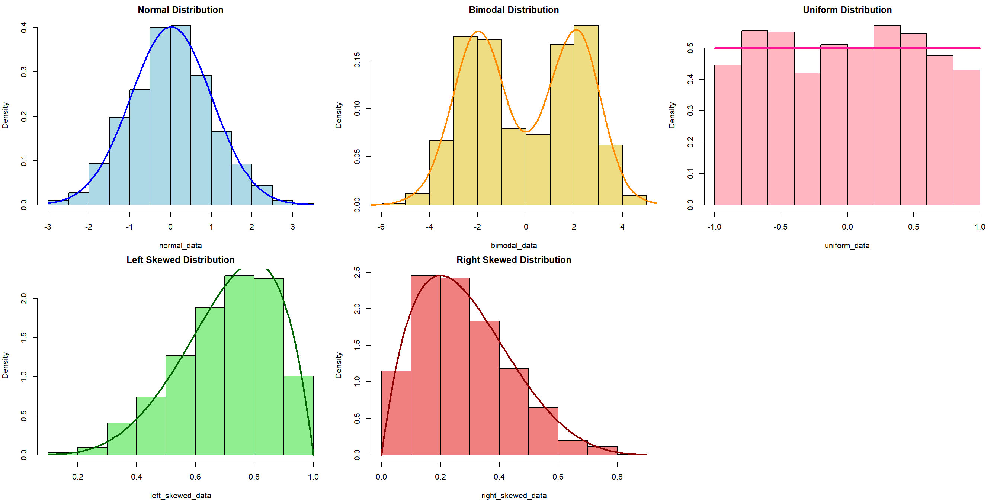
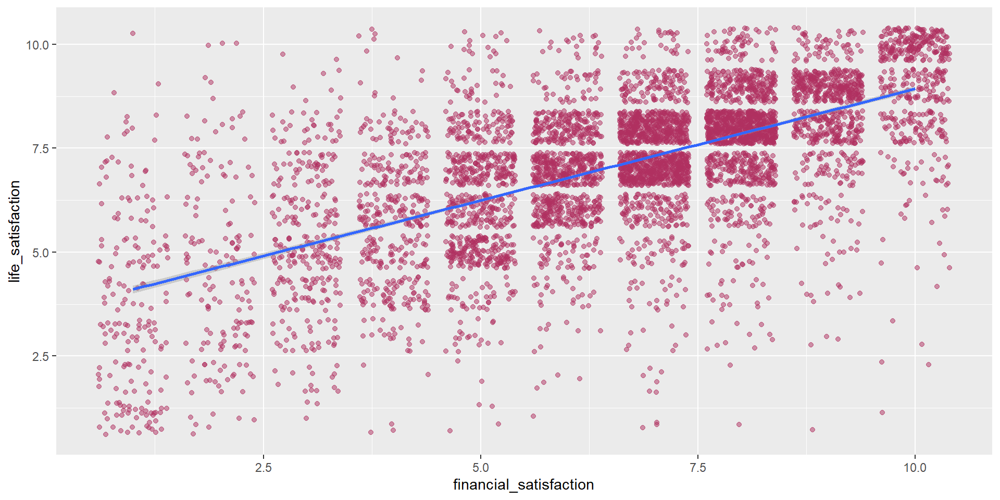
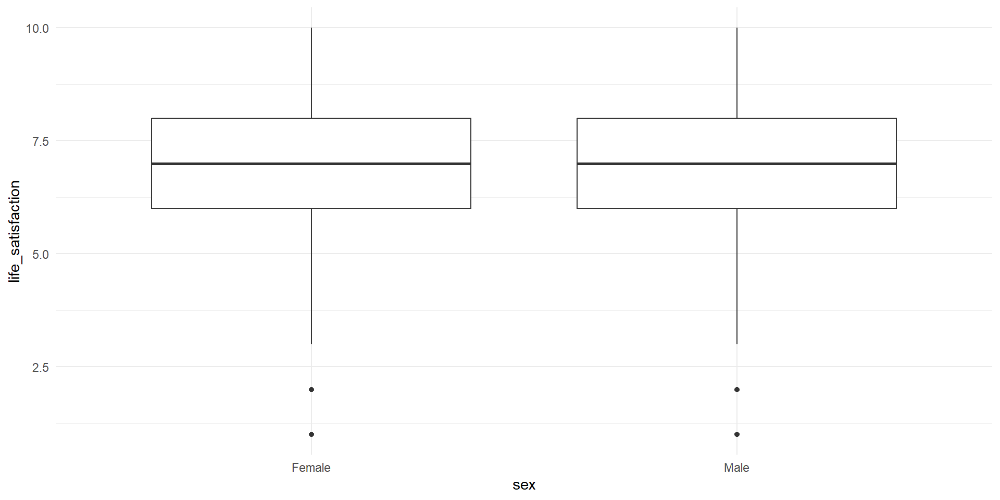
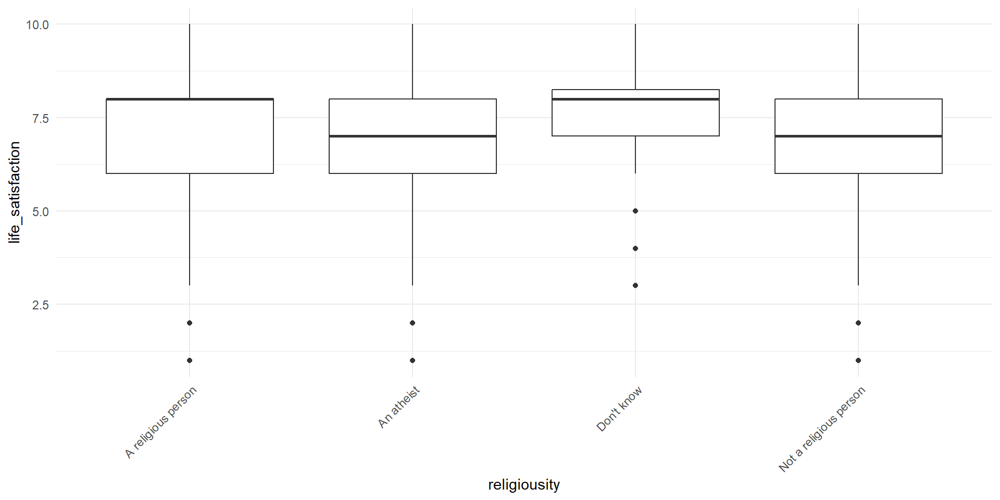
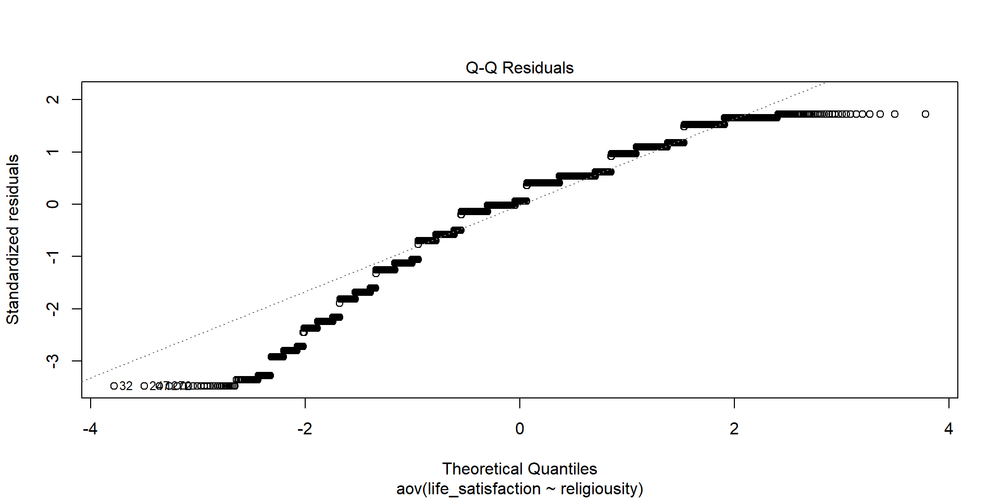
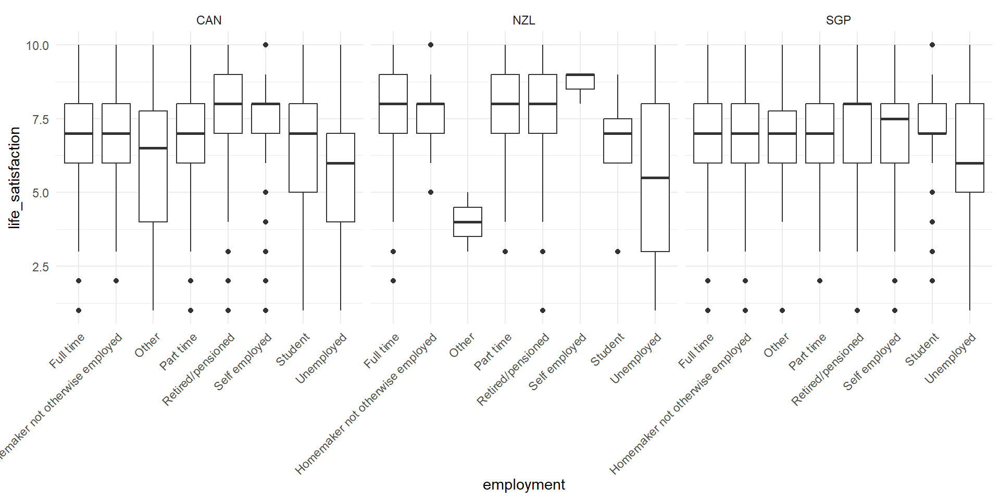

# import tidyverse library
library(tidyverse)
# read the WVS data
wvs_data <- read_csv("data-output/wvs_processed.csv")
# Convert categorical variables to factors
wvs_data <- wvs_data |>
mutate(across(c("country", "sex", "marital_status",
"employment", "religiousity"), as.factor))
# peek at the data
glimpse(wvs_data)Basic Inferential Stats in R: Correlation, T-Tests, and ANOVA
Bella Ratmelia
Today’s Outline
- Refreshers on data distribution and research variables
- Statistical tests: chi-square, t-test, correlations.
- ANOVA
Refresher: Data Distribution
The choice of appropriate statistical tests and methods often depends on the distribution of the data. Understanding the distribution helps in selecting the right and validity of the tests.
Refresher: Research Variables
Dependent Variable (DV)
The variables that will be affected as a result of manipulation/changes in the IVs
- Other names for it: Outcome, Response, Output, etc.
- Often denoted as \(y\)
Independent Variable (IV)
The variables that researchers will manipulate.
- Other names for it: Predictor, Covariate, Treatment, Regressor, Input, etc.
- Often denoted as \(x\)
Load our data for today!
Use read_csv from readr package (part of tidyverse) to load our data into a dataframe
Chi-square test of independence
The \(X^2\) test of independence evaluates whether there is a statistically significant relationship between two categorical variables.
This is done by analyzing the frequency table (i.e., contingency table) formed by two categorical variables.
Example: Is there a relationship between religiousity and marital_status in our WVS data?
Typically, we can start with visualizing the data first!
Divorced Living together as married Married Separated
A religious person 135 154 1562 46
An atheist 56 204 431 34
Don't know 1 7 23 0
Not a religious person 152 398 1261 59
Single Widowed
A religious person 590 118
An atheist 338 24
Don't know 9 4
Not a religious person 731 66Chi-Square: Sample problem and results
Is there a relationship between religiosity and marital_status?
Pearson's Chi-squared test
data: table(wvs_data$religiousity, wvs_data$marital_status)
X-squared = 277.36, df = 15, p-value < 2.2e-16- X-squared = the coefficient
- df = degree of freedom
- p-value = the probability of getting more extreme results than what was observed. Generally, if this value is less than the pre-determined significance level (also called alpha), the result would be considered “statistically significant”
What if there is a hypothesis? How would you write this in the report?
Correlation
A correlation test evaluates the strength and direction of a linear relationship between two variables. The coefficient is expressed in value between -1 to 1, with 0 being no correlation at all.
Pearson’s \(r\) (r)
- Measure the association between two continuous numerical variables
- Sensitive to outliers
- Assumes normality and/or linearity
- (most likely the one that you learned in class)
Kendall’s \(\tau\) (tau)
- Measure the association between two variables (ordinal-ordinal or ordinal-continuous)
- less sensitive/more robust to outliers
- non-parametric, does not assume normality and/or linearity
Spearman’s \(\rho\) (rho)
- Measure the association between two variables (ordinal-ordinal or ordinal-continuous)
- less sensitive/more robust to outliers
- non-parametric, does not assume normality and/or linearity
For more info, you can refer to this reading: Measures of Association - How to Choose? (Harry Khamis, PhD)
Correlation: Sample problem and result
RQ: Is there a significant correlation between life satisfaction and financial satisfaction?
As both variables are numerical and continuous, we can use pearson correlation.
Let’s start with visualizing the data, which can be used to support the explanation.
Conduct the correlation test
Pearson's product-moment correlation
data: wvs_data$life_satisfaction and wvs_data$financial_satisfaction
t = 66.999, df = 6401, p-value < 2.2e-16
alternative hypothesis: true correlation is not equal to 0
95 percent confidence interval:
0.6274032 0.6562061
sample estimates:
cor
0.6420311 - cor is the correlation coefficient - this is the number that you want to report.
- t is the t-test statistic
- df is the degrees of freedom
- p-value is the significance level of the t-test
- conf.int is the confidence interval of the coefficient at 95%
- sample estimates is the correlation coefficient
Let’s try this correlation exercise! (5 mins)
Calculate the correlation coefficient between life satisfaction and freedom
Which method should you use for this?
How strong is the correlation? i.e. would you say it’s a strong correlation?
In which direction is the correlation?
Is the correlation coefficient statistically significant?
Visualize the relationship!
T-Tests
A t-test is a statistical test used to compare the means of two groups/samples of continuous data type and determine if the differences are statistically significant.
- The Student’s t-test is widely used when the sample size is reasonably small (less than approximately 30) or when the population standard deviation is unknown.
3 types of t-test
One-sample T-test
Test if a specific sample mean (X̄) is statistically different from a known or hypothesized population mean (μ or mu)
Two-samples / Independent Samples T-test
Used to compare the means of two independent groups (such as between-subjects research) to determine if they are significantly different.
Examples: Men vs Women group, Placebo vs Actual drugs.
Paired Samples T-Test
Used to compare the means of two related groups, such as repeated measurements on the same subjects (within-subjects research).
Examples: Before workshop vs After workshop.
T-test: One-sample T-Test
RQ: Is the average life satisfaction in our sample significantly different from the global average of 6.5?
Let’s start with visualizing the data
Conduct the One-sample T-Test
One Sample t-test
data: wvs_data$life_satisfaction
t = 26.776, df = 6402, p-value < 2.2e-16
alternative hypothesis: true mean is not equal to 6.5
95 percent confidence interval:
7.060083 7.148570
sample estimates:
mean of x
7.104326 What if there is a hypothesis? How would you write this in the report?
T-Test: Independent Samples T-Test
RQ: Is there a significant difference in life satisfaction between males and females?
Let’s first take only the necessary columns and get some summary statistics, particularly on the number of samples for each group, as well as the mean, standard deviation, and variance.
# A tibble: 2 × 5
sex total mean variance stdeviation
<fct> <int> <dbl> <dbl> <dbl>
1 Female 3232 7.11 3.18 1.78
2 Male 3171 7.09 3.35 1.83Visualize the differences between two samples
The variance will be easier to see when we visualize it as well. As we can see, the variance for Y group is wider than the N group. This suggests that the variance might be heterogeneous (heteroskedastic).
Conduct the independent samples T-test
Remember, the hypotheses are:
\(H_0\): There is no significant difference in the mean age between those who intend to vote “Yes” and those who intend to vote “No”.
\(H_1\): There is a significant difference in the mean age between those who intend to vote “Yes” and those who intend to vote “No”.
Welch Two Sample t-test
data: life_satisfaction by sex
t = 0.41256, df = 6387.7, p-value = 0.6799
alternative hypothesis: true difference in means between group Female and group Male is not equal to 0
95 percent confidence interval:
-0.06988992 0.10714841
sample estimates:
mean in group Female mean in group Male
7.113552 7.094923 Notice that we are using Welch’s t-test instead of Students’ t-test
Welch’s t-test (also known as unequal variances t-test, is a more robust alternative to Student’s t-test. It is often used when two samples have unequal variances and possibly unequal sample sizes.
T-Test: Paired Sample T-Test
Unfortunately, our data is not suitable for paired T-Test. For demo purposes, we are going to use a built-in sample datasets called sleep from the base R dataset.
The dataset is already loaded, so you can use it right away!
- type
View(sleep)in your R console (bottom left), and then press enter. RStudio will open up the preview of the dataset. - type
?sleepin your R console to view the help page (a.k.a vignette) about this dataset. - type
data()in your console to see what are the available datasets that you can use for practice!
Rows: 20
Columns: 3
$ extra <dbl> 0.7, -1.6, -0.2, -1.2, -0.1, 3.4, 3.7, 0.8, 0.0, 2.0, 1.9, 0.8, …
$ group <fct> 1, 1, 1, 1, 1, 1, 1, 1, 1, 1, 2, 2, 2, 2, 2, 2, 2, 2, 2, 2
$ ID <fct> 1, 2, 3, 4, 5, 6, 7, 8, 9, 10, 1, 2, 3, 4, 5, 6, 7, 8, 9, 10Visualise the before (group 1) and after (group 2)
# A tibble: 2 × 5
group n mean sd variance
<fct> <int> <dbl> <dbl> <dbl>
1 1 10 0.75 1.79 3.20
2 2 10 2.33 2.00 4.01Transform the data shape
The data is in long format. let’s transform it into wide format so that we can conduct the analysis more easily.
Rows: 10
Columns: 3
$ ID <fct> 1, 2, 3, 4, 5, 6, 7, 8, 9, 10
$ group_1 <dbl> 0.7, -1.6, -0.2, -1.2, -0.1, 3.4, 3.7, 0.8, 0.0, 2.0
$ group_2 <dbl> 1.9, 0.8, 1.1, 0.1, -0.1, 4.4, 5.5, 1.6, 4.6, 3.4Conduct the paired-sample T-test
Remember, the hypotheses are:
\(H_0\): There is no significant difference in the increase in hours of sleep.
\(H_1\): There is a significant difference in the increase in hours of sleep.
Paired t-test
data: Pair(sleep_wide$group_1, sleep_wide$group_2)
t = -4.0621, df = 9, p-value = 0.002833
alternative hypothesis: true mean difference is not equal to 0
95 percent confidence interval:
-2.4598858 -0.7001142
sample estimates:
mean difference
-1.58 ANOVA (Analysis of Variance)
ANOVA (Analysis of Variance) is a statistical test used to compare the means of three or more groups or samples and determine if the differences are statistically significant.
There are two ‘mainstream’ ANOVA that will be covered in this workshop:
- One-Way ANOVA: comparing means across two or more independent groups (levels) of a single independent variable.
- Two-Way ANOVA: comparing means across two or more independent groups (levels) of two independent variable.
- Other types of ANOVA that you may encounter: Repeated measures ANOVA, Multivariate ANOVA (MANOVA), ANCOVA, etc.
One-Way ANOVA: Sample problem and result
RQ: Is there a significant difference in life satisfaction between different religiousity?
Let’s visualize the data first!
Conduct the one-way Anova test
satisfaction_religiousity_anova <- aov(life_satisfaction ~ religiousity, data = wvs_data)
summary(satisfaction_religiousity_anova) Df Sum Sq Mean Sq F value Pr(>F)
religiousity 3 128 42.82 13.2 1.36e-08 ***
Residuals 6399 20752 3.24
---
Signif. codes: 0 '***' 0.001 '**' 0.01 '*' 0.05 '.' 0.1 ' ' 1- F-value: the coefficient value
- Pr(>F): the p-value
- Sum Sq: Sum of Squares
- Mean Sq : Mean Squares
- Df: Degrees of Freedom
Post-hoc test (only when result is significant)
If your ANOVA test indicates significant result, the next step is to figure out which category pairings are yielding the significant result.
Tukey’s Honest Significant Difference (HSD) can help us figure that out! Other alternative is the pairwise.t.test, but let’s try Tukey’s for now.
Tukey multiple comparisons of means
95% family-wise confidence level
Fit: aov(formula = life_satisfaction ~ religiousity, data = wvs_data)
$religiousity
diff lwr upr
An atheist-A religious person -0.3673683 -0.53446513 -0.20027152
Don't know-A religious person 0.1029838 -0.60052046 0.80648800
Not a religious person-A religious person -0.2272818 -0.35475772 -0.09980581
Don't know-An atheist 0.4703521 -0.24126460 1.18196879
Not a religious person-An atheist 0.1400866 -0.02643742 0.30661054
Not a religious person-Don't know -0.3302655 -1.03363393 0.37310286
p adj
An atheist-A religious person 0.0000001
Don't know-A religious person 0.9818620
Not a religious person-A religious person 0.0000279
Don't know-An atheist 0.3245019
Not a religious person-An atheist 0.1341519
Not a religious person-Don't know 0.6226518ANOVA Assumptions
The Dependent variable should be a continuous variable
The Independent variable should be a categorical variable
The observations for Independent variable should be independent of each other
The Dependent Variable distribution should be approximately normal – even more crucial if sample size is small.
- You can verify this by visualizing your data in histogram, or use Shapiro-Wilk Test, among other things
The variance for each combination of groups should be approximately equal – also referred to as “homogeneity of variances” or homoskedasticity.
- One way to verify this is using Levene’s Test
No significant outliers
Verifying the assumption: Test for Homogeneity of variance
Levene’s Test to test for homogeneity of variance i.e. homoskedasticity
Levene's Test for Homogeneity of Variance (center = median)
Df F value Pr(>F)
group 3 0.6941 0.5555
6399 The results indicate that the p-value is less than the significance level of 0.05, suggesting a significant difference in variance across the groups. Consequently, the assumption of homogeneity of variances is violated.
Plotting Residuals: Residual vs Fitted
When we plot the residuals1, we can see some outliers as well:
Verifying the assumptions: Test for Normality
Shapiro-Wilk Test to test for normality.
Shapiro-Wilk normality test
data: wvs_data$age[0:5000]
W = 0.9726, p-value < 2.2e-16The p-value from the Shapiro-Wilk test is less than the significance level of 0.05, indicating that the data significantly deviates from normality. Therefore, the assumption of normality is not satisfied.
Plotting Residuals: Q-Q Plot
We can see this better from when we plot the residuals:
When the assumptions are not met…
We can use Kruskal-Wallis rank sum test as an non-parametric alternative to One-Way ANOVA!
Kruskal-Wallis rank sum test
data: life_satisfaction by religiousity
Kruskal-Wallis chi-squared = 41.101, df = 3, p-value = 6.224e-09Other alternative: Welch’s ANOVA for when the homoskedasticity assumption is not met.
Two-Way ANOVA: Sample problem and result
RQ: Is there a significant difference in life satisfaction across religiousity and countries?
Let’s visualize the data!
Conduct the Two-way ANOVA test
Df Sum Sq Mean Sq F value Pr(>F)
religiousity 3 128 42.82 13.32 1.15e-08 ***
country 2 192 95.83 29.82 1.29e-13 ***
Residuals 6397 20560 3.21
---
Signif. codes: 0 '***' 0.001 '**' 0.01 '*' 0.05 '.' 0.1 ' ' 1Post-hoc test for Two-way ANOVA
Tukey multiple comparisons of means
95% family-wise confidence level
Fit: aov(formula = life_satisfaction ~ religiousity + country, data = wvs_data)
$religiousity
diff lwr upr
An atheist-A religious person -0.3673683 -0.53371770 -0.2010189
Don't know-A religious person 0.1029838 -0.59737368 0.8033412
Not a religious person-A religious person -0.2272818 -0.35418751 -0.1003760
Don't know-An atheist 0.4703521 -0.23808153 1.1787857
Not a religious person-An atheist 0.1400866 -0.02569256 0.3058657
Not a religious person-Don't know -0.3302655 -1.03048776 0.3699567
p adj
An atheist-A religious person 0.0000001
Don't know-A religious person 0.9816251
Not a religious person-A religious person 0.0000253
Don't know-An atheist 0.3204859
Not a religious person-An atheist 0.1313305
Not a religious person-Don't know 0.6191993
$country
diff lwr upr p adj
NZL-CAN 0.53301723 0.3565021 0.70953237 0.0000000
SGP-CAN -0.04499362 -0.1659695 0.07598224 0.6580925
SGP-NZL -0.57801085 -0.7703672 -0.38565452 0.0000000Let’s try this ANOVA exercise! (5 mins)
Is there a significant difference in political leaning between different sex?
- Visualize the data as well
- Test for normality and homoskedasticity, and choose the appropriate test
End of Session 4!
Next session: Linear and Logistic Regressions!